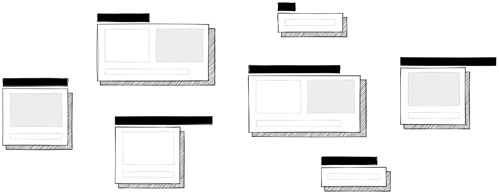
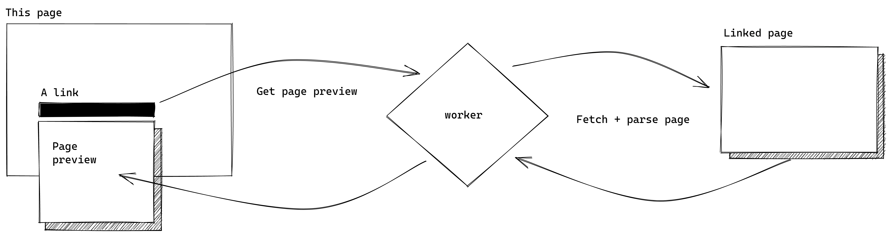

Hyperfov: Page Previews
Hyperfov: Page Previews
Page previews everywhere
Page previews are great!
I find page previews are fantastic little piece of interactivity; they give insight into where a link leads before you click it. From poorly formed link text to sketchy URLs, there's plenty of reasons a bit more information might help before clicking into a new link. Outside of a few sites like Wikipedia, Github, and Twitter that have implemented previews for some internal links, they're relatively rare to see around the web.
Making global previews can be tricky
One key challenge—and why you likely don't often see previews for arbitrary links on webpages—is that fetching dynamic content from a different domain is impossible from the browser.
Page previews are also often displayed as little popups that appear when a link is hovered, making them not particularly mobile-friendly. It's often considered a best practice to avoid hover events that aren't purely decorative, and unfortunately page previews fall into the category of non-decorative hover interactions.
That said, when considering them a form of progressive enhancement, they're certainly a very useful addition to pages when viewed on a desktop. I also don't think it's impossible to have page previews on mobile sites, but that's a design exploration for another day.
How these page previews work
This package is composed of two components:
- A script that inserts page previews on a webpage, written as a Svelte web component.
- A serverless worker function that fetches and serves the links' meta information, deployable on Cloudflare Workers.
The serverless function is my solution to the aforementioned CORS problem; it does the work of requesting each link on behalf of the client. A script embedded in the page extracts links, sends them to the worker, then adds the preview popups when hovered.
This structure brings us closer to the goal of global page previews; now any arbitrary link on a page can be turned into a rich preview when hovered thanks to a helpful worker off-client.
More details are available on the project's repository.
Using it
This project is very much a work in progress, there'll still be lots of weirdness in use. There's a ton to consider to make these previews bulletproof for use on any website, so I'm starting small and mainly focusing on getting the package working for sites with static content, like this one.
Style is another area of focus: page previews should feel integrated on any page. Every element in the preview popup can be styled with custom rules:
Find more information about how styling is handled in the project's documentation
I built this project as part of my Twelve Websites project. I'm currently integrating it into my other sites and will be making adjustments as needed. Find a list of the improvements I'm planning on making here.